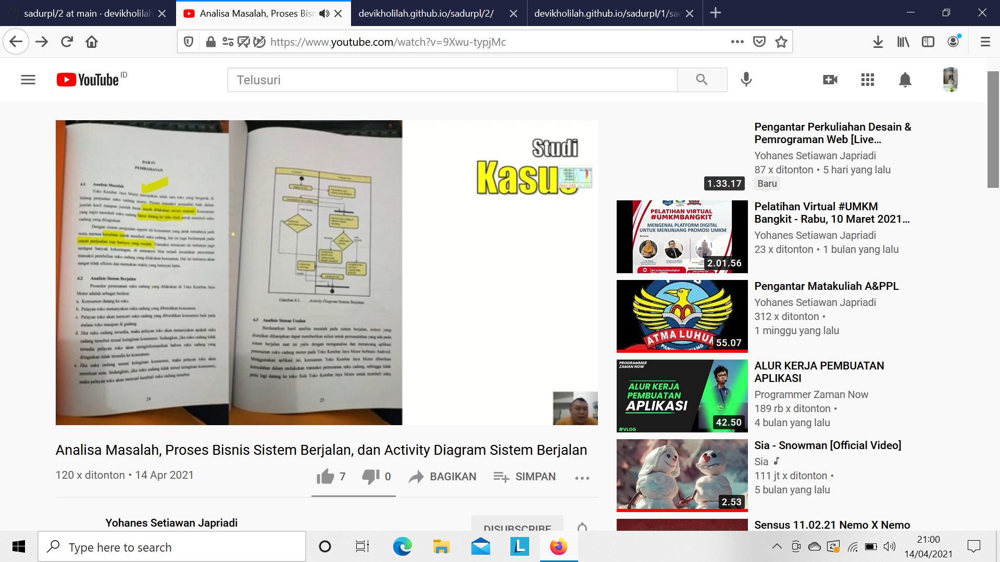
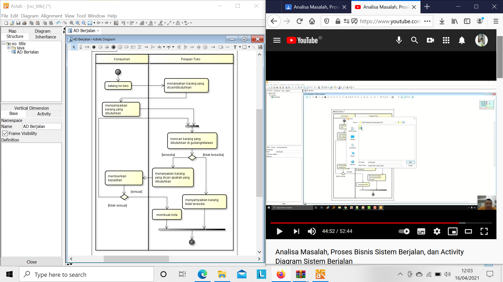

nama : Devi Kholilah
nim : 1811500057
kelompok :TI6J
berikut adalah hasil saduran saya
1. perhitungan nilai kehadiran dengan cara membuat folder 2 dengan cara create new file,ketik angka 2/ kemudian beri nama file index.html
2. menganalisa masalah dan dilanjutkan menganalisa proses sistem berjalan pada kasus penjualan suatu toko dan pemesanan pada suatu toko
3. serta perhitungan nilai tugas yang dinilai dari kualitas menyadur mahasiswa pada setiap pertemuan


hasil file projek astah Download